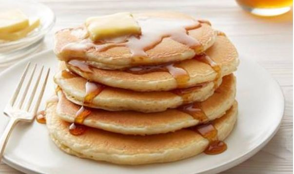

Fix Yourself a Easy Pancakes

Ingredients
- 1 cup(approx 128g) all-purpose flour
- 2 tbsp approx 14.3g) sugar
- 2 tsp baking powder
- 1 tsp salt
- 1 egg, beaten
- 1 cup(approx 230ml) milk
- 2 tbsp vegetable oil
Steps
- In a large bowl mix all the dry Ingredients.
- Make a well in centre and pour in milk, egg and oil. Mix until smooth.
- If the batter is too thick add milk to match the proper thickness.
- Heat a lightly greased grilled or frying pan over medium high heat. Pour or scoop the batter onto the pan, using approximately 1/4 cup for each pancake.
- When little pores are formed flip the pancakes.
- Cook each side until golden brown on both side.
- Serve immediately
- Chef's tip - Stack the pancakes and add cube of butter on top. Your instagram picture is ready!
Nutrition Facts
Per Serving: 247 calories, 6.8g protein, 33.5g carbohydrates, 9.6g fats, 51.4mg cholesterol, 804.3mg sodium
Back to Top
Back to Homepage